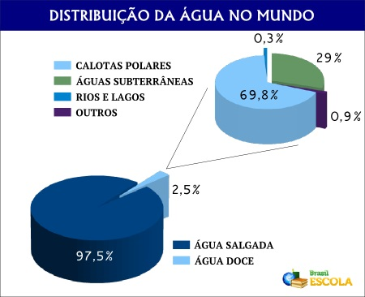

ARTIGO
Água do mar é propicia para consumo?
Água do mar e seu consumo:
No mundo, a água salgada representa cerca de 97,5% de toda água presente e apenas 3% é potável. Entretanto pôr a água do mar estar em grande quantidade, há a questão das pessoas questionarem do porquê não usa-la para consumo humano.
Destribuição de Água
A água salgada não pode ser consumida da maneira que é encontrada. E um dos motivos para não se ingeri-la é que, esta desencadeia desidratação devido a quantidade de sais presente nela. Uma substancia encontrada nesse tipo de água é o cloreto de sódio, mais conhecido como sal de cozinha.
Ao ingerir esse sal em grade quantidade faz com que as células de nosso corpo comessem a perder água devido ao processo de osmose, processo no qual a água entra e sai da nossa célula, provocando assim desidratação. Além da pessoa começa a sentir ainda mais sede.
A água do mar possui sais que podem causar irritações intestinais causando alguns problemas com diarreia que, consequentemente, agrava mais a desidratação.
Estimasse que a concentração de sais na água potável é cerca de sete vezes menor comparada a quantidade presente na água do mar. E para cada litro ingerido de água salgada, dois litros de água doce são necessários para dissolver toda a quantidade de sal ingerida.
Com os avanços tecnológicos, foi criado um processo para a população utilize a água do mar, chamada de Dessalinização de água. Esse processo é utilizado em várias partes do mundo, como na Arábia Saudita, cujo processo representa cerca de 70% de toda a água doce consumida no país. No Brasil, nove estados também já apresentam regiões que contam com essa técnica.
Entretanto um dos problemas que ela apresenta e consequentemente impede que seja mais utilizada é seu custo. Devido ao alto gasto de energia para realizar o processo e capital pra ser construída usinas para a "purificação" da água.
Processos para dessalinização da água:
Evaporação ou dessalinização térmica
A água é armazenada em um tanque coberto com material transparente, em um local propicio para receber luz solar, onde aquece e começa a evaporar. O vapor acumulado na parte superior do reservatório de água se condensa gradativamente e se transforma em água sem o sal que estava presente antes. No final do processo a água é capturada e transferida para outro tanque, onde é armazenado e utilizado para consumo.
Dessalinização Térmica
Osmose reversa
Ocorre quando uma forte pressão é aplicada à água para movê-la em direção a alguma membrana que pode separar praticamente toda a água dos sais minerais e outras impurezas presentes no volume original.
Osmose reversa
Destilação multiestágios
Nesse método, a água é aquecida em uma tubulação, onde entra em ebulição e passa por sucessivos processos de destilação, depois é aquecida e transferida para pontos com diferentes níveis de pressão. Esse processo garante uma maior pureza da água, mas é mais caro.
Destribuição multiestágios
Por isso, diante de crises de água potável, a principal opção e solução pra esse problema é o uso consciente, reutilização da água e reaproveitamento de água da chuva. Sendo essas formas as mais eficazes para evadir racionamentos.
Referências
SOUZA, Líria Alves de. Dessalinização da água; Brasil Escola. Disponível em: (link) Acesso em 19 de novembro de 2021.
PENA, Rodolfo F. Alves. "Dessalinização da água"; Brasil Escola. Disponível em: (link) Acesso em 19 de novembro de 2021.